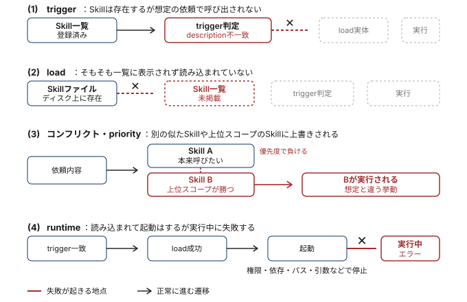

claude-code 101
2026年05月02日
claude --debugで構造・読込み問題を診断できる
regmonkey_index:
title_fontsize: 1.2em
bullet_fontsize: 1.0em
children:
- title: 1. トラブルは4カテゴリ<br>に分かれる
description:
- <strong>trigger / load / 重複 / runtime</strong>のどれかに収束する
- カテゴリを先に当てれば対処手順が一意に決まる
width: [40, 60]
- title: 2. Skills Validator<br>から始める
description:
- 構造的な問題は<strong>デバッグ前に弾く</strong>のが定石
- <code>claude --debug</code>で読込みエラーを補完
width: [40, 60]
- title: 3. trigger / load / 重複<br>の切り分け
description:
- 起動しない・読込まれない・他Skillが選ばれるの3症状
- 大半は<strong>descriptionの書き方</strong>に帰着する
width: [40, 60]
- title: 4. Priorityとプラグイン特有<br>の症状
description:
- enterprise > project > personalの<strong>優先順位</strong>で上書きされる
- プラグインSkillはcache再構築で復活することが多い
width: [40, 60]
- title: 5. Runtime errorsの<br>3点チェック
description:
- <strong>依存・実行権限・パス区切り</strong>を順に確認
- SKILL.md冒頭にdependency情報を明記
width: [40, 60]トラブル分類とSkills Validator
trigger / load / 重複の切り分け
Priorityとプラグイン特有の症状
Runtime errorsの3点チェック
「動かない」を漠然と探さず，trigger / load / 重複 / runtimeのどれかに当てはめる

切り分けの基本姿勢
descriptionや実行ロジックを疑う前に，構造バリデーションでファイル配置・YAMLを確認する
最初に試すコマンド
agent skills verifier を導入：uv経由のインストールが最短，uv tool install skills-refvalidate コマンドの実行例
agentskills validate <skillパス> で実行：成功時は Valid skill: <パス> のみ出力claude --debug でSkill名を含むエラー行を探し，trigger / load / 重複 / runtimeの切り分けに進むトラブル分類とSkills Validator
trigger / load / 重複の切り分け
Priorityとプラグイン特有の症状
Runtime errorsの3点チェック
Skill選択 = 依頼文とdescriptionの意味マッチ．重なりが薄いと発火しない
descriptionとユーザ語彙のズレを見直す
help me profile this / why is this slow? / make this faster 等のバリエーションでテストするNGパターン
claude の一覧に出てこない = Skillは読み込まれていない．配置とファイル名から確認する
Skill読込み時の必須要件
SKILL.md：SKILL 大文字・md 小文字を守るclaude --debug で読込みエラーを表示し，Skill名を含むメッセージを確認する正しい配置例
Claudeが似たSkillを取り違える，あるいは混乱する場合，description同士の意味が近すぎる
descriptionは独立性を高める
書き分けの観点
トラブル分類とSkills Validator
trigger / load / 重複の切り分け
Priorityとプラグイン特有の症状
Runtime errorsの3点チェック
個人Skillが無視される場合，同名のenterprise Skillが優先されているのが定番パターン
Skill priorityの基本ルール
code-review」と「個人のcode-review」が並ぶと，enterprise側が必ず勝つ対処の選択肢
インストール直後の不具合は環境状態の問題が多い．構造の問題はvalidatorで弾く
復旧手順は3ステップ固定
rm ~/.claude/plugins/cacheそれでも見えない場合
skills/ディレクトリ配下に，個別SkillがSKILL.mdを持つフォルダで分かれているか確認するトラブル分類とSkills Validator
trigger / load / 重複の切り分け
Priorityとプラグイン特有の症状
Runtime errorsの3点チェック
依存
Missing dependencies
権限
Permission issues
chmod +x を全スクリプトに適用パス
Path separators
record1:
category: triggerしない
rule:
- <span class="regmonkey-bold">descriptionとユーザ語彙のズレ</span>が原因のほぼ全て
actions:
- 実際の依頼フレーズをdescriptionに反映
- トリガーフレーズ・キーワードを追加
- バリエーションでテストし発火を確認
record2:
category: loadしない
rule:
- <span class="regmonkey-bold">配置・ファイル名・YAML</span>のいずれかが破綻
actions:
- 名前付きディレクトリ配下に <code>SKILL.md</code> を置く
- ファイル名を <code>SKILL.md</code> に厳密一致させる
- <code>claude --debug</code> でSkill名を含む行を確認
record3:
category: 違うSkillが選ばれる
rule:
- description同士の<span class="regmonkey-bold">意味が近すぎる</span>
actions:
- 対象範囲・タイミング・出力で書き分ける
- Skill名と説明から重複を解消
- 統合可能なら1つにまとめる
record4:
category: Priorityで負ける
rule:
- 上位スコープに<span class="regmonkey-bold">同名Skill</span>が存在
actions:
- Skill名を独自性の高い名前に変更
- 管理者にenterprise Skillの扱いを相談
- 役割の重複は機能差で名前に表現
record5:
category: プラグイン未表示
rule:
- <span class="regmonkey-bold">キャッシュ・再起動・再インストール</span>で大半復旧
actions:
- キャッシュをクリア
- Claude Codeを再起動
- プラグインを再インストール．残ればvalidator
record6:
category: Runtime失敗
rule:
- <span class="regmonkey-bold">依存・権限・パス</span>の3点を順に確認
actions:
- 必要パッケージをdescriptionに明記
- <code>chmod +x</code> でスクリプトに実行権限
- パス区切りは全環境でforward slashに統一Regmonkey Presentation. ©Ryo Nakagami. All rights reserved.